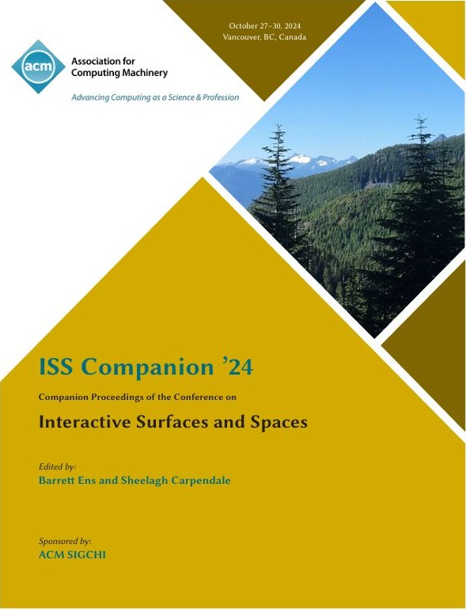
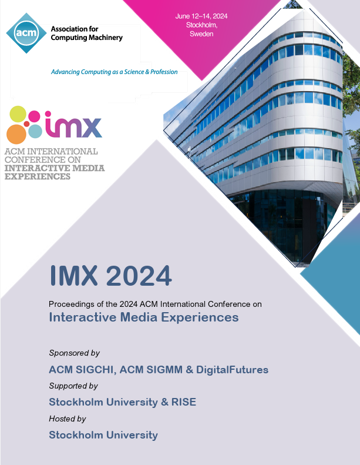
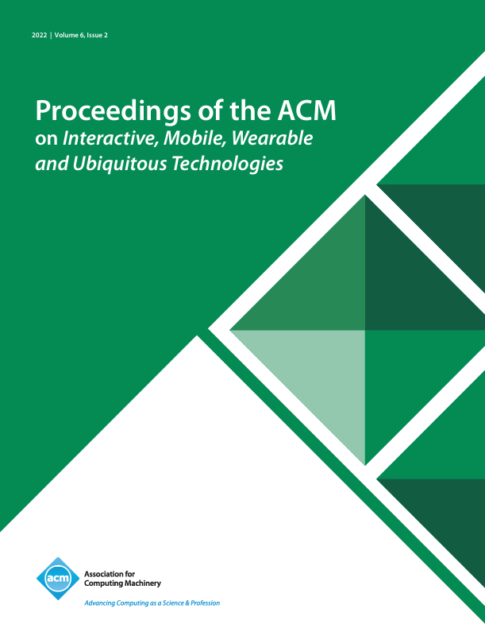
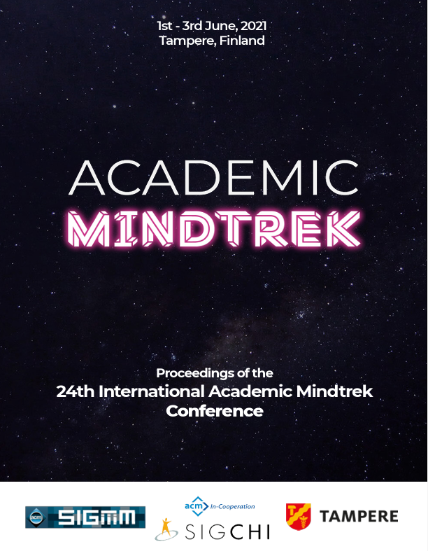

Academia
2024 - 2025

Exhibition: Nature into Art - Rachel Ruysch
Create Your Own Ruysch: Supervising a student group project resulting in four bachelor theses
Cooperation CreatiF Center x Alte Pinakothek x LMU Munich
Website >
2024

ACM Interactive Surfaces and Spaces '24 (ISS)
Volunteered as Proceedings Co-Chair in Organizing Committee
Proceedings of the ACM International Conference on Interactive Media Experiences 2024
Proceedings >

Elizabeth Bouquet, Simon v. d. Au, Christina Schneegaß, Florian Alt
CoAR-TV: Design and Evaluation of Asynchronous Collaboration in AR-Supported TV Experiences
Proceedings of the ACM International Conference on Interactive Media Experiences 2024
Publication >
2022

Augusto Esteves, Elizabeth Bouquet, Ken Pfeuffer, Florian Alt
One-Handed Input for Mobile Devices via Motion Matching and Orbits Controls
Proceedings of the ACM on Interactive, Mobile, Wearable and Ubiquitous Technologies 6.2 (2022)
Publication >
2021

Elizabeth Bouquet, Ville Mäkelä, Albrecht Schmidt
Exploring the Design of Companions in Video Games
Academic Mindtrek 2021
Publication >